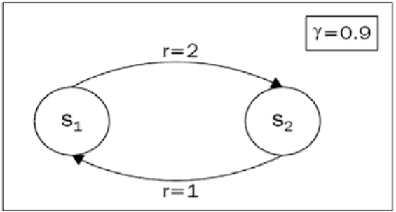

Written by LeeKH
The value iteration method¶
Value iteration with Example¶
Value iteration 방법에 대해 소개하기 앞서 아래 다이어그램과 같은 loop를 포함하는 environment가 있다고 가정해보자.

- 상태 $S_1$에서 $S_2$로 가는 경우의 보상 $r$은 2다. 반대의 경우에 해당하는 보상은 1이다
- Discount factor $\gamma$는 0.9 다
- 초기 상태를 $S_1$로 가정하면, agent는 $S_2$로 이동하는 선택지 밖에 없다
Agent가 $S_1$에서 시작하는 경우 [1,2,1,2,1,2,1,2,1,2,…] 순서로 무한히 돌게 된다. 각 상태에 대한 가치 값을 계산하기 위한 수식은 아래와 같다. $$ V(s_1) = 1+ \gamma(2+\gamma(1+\gamma(2+ …))) = \sum_{i=0}^{\infty}1\gamma^{2i}+2\gamma^{2i+1} $$ Agent가 $S_2$에서 시작하는 경우 [2,1,2,1,2,1,2,1,2,1,…] 순서로 무한히 돌게 되고 마찬가지로 아래와 같이 표현 가능하다. $$ V(s_2) = 2 + \gamma(1+\gamma(2+\gamma(1+…))) = \sum_{i=0}^{\infty}2\gamma^{2i}+1\gamma^{2i+1} $$ 두 수식은 크게 다르지 않지만 서로의 보상은 다르기 때문에 수렴하는 값에는 차이가 있다. 약 50번째 까지 계산을 하면 각 상태의 기대값은 $V(s_1)=14.73$ , $V(s_2) = 15.26$ 이다.
Value iteration algorithm¶
앞의 간단한 예제에서 각 상태의 기대값 계산을 위해 반복(iteration)적인 계산 과정을 수행하였는데 이러한 절차를 value iteration algorithm이라고 한다.
A. Value of states¶
$V_s$로 표현되는 특정 상태 $s$에 대해서 value iteration 절차는 아래와 같다
- 모든 상태에 대한 기대값 $V_{i}$를 모두 초기화 한다. 예를 들어 모든 값을 0으로 초기화한다
- Markov Decision Process로 정의되는 모든 상태에 대해 Bellman update를 수행한다. 수식으로 표현하면 아래 수식과 같다
- Step 2를 수치 변화 폭이 작아질때 까지 계속해서 반복한다
$$ V_s = \max_{a}\sum_{s’}p_{a,s\to s’}(r_{s,a} + \gamma V_{s’}) $$
B. Value of Actions(Q)¶
특정 상태 s와 행동 a의 가치를 반환하는 Q함수를 사용해 value iteration 절차를 수행하면 아래와 같다
- $Q_{s,a}$를 모두 0으로 초기화 한다
- 모든 상태 s와 그때의 모든 행동 a에 대해서 아래의 수식과 같이 Q함수를 update한다
- 수치 변화 폭이 작아지는 시점까지 Step 2를 반복한다
$$ Q_{s,a} \leftarrow \sum_{s’}p_{a,s\to s’}(r_{s,a} + \gamma \max_{a’}Q_{s’,a’}) $$
Limits of value iteration methods¶
Size of state space problem¶
가치함수를 사용하거나 큐함수를 사용하는 경우 모두 모든 상태공간 $S$에 대한 연산을 수행하게된다. 일부 간단한 예시 환경(ex. 4x4 Frozen Lake, GridWorld)에서는 계산이 가능하지만 다음 상태 값이 실수 좌표 영역으로 표시되는 CartPole같은 환경에서는 상태공간이 무한하므로 value iteration을 적용하기 힘들다
State transition probability problem¶
또 다른 문제점은 위의 (A), (B)에서 모두 등장한 상태 이동 확률($p_{a,s \to s’}$)이다. 실제 환경에서는 상태 이동 확률 같은 값을 사전에 모두 조사하는게 불가능한 경우가 많다. 대부분의 문제는 현재 상태 $s_t$가 주어지고 특정 행동 $a_t$을 수행하면 보상 $r_t$과 다음 상태 $s_{t+1}$가 주어질 뿐이다.
References¶
- Deep Reinforcement Learning Hands-On, Maxim Lapan, 2018